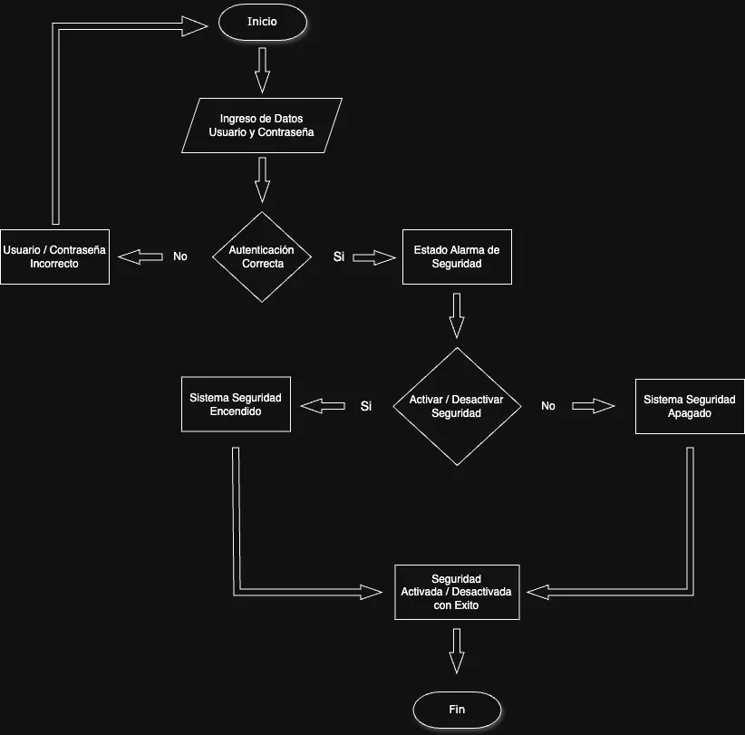

Identificación Proceso Organizacional
Aprendiz: Ivan Dario Madrid Daza
Instructor: Alejandro Zabala Díaz
Valledupar - Cesar
Análisis y Desarrollo de Software - SENA
Aprendiz: Ivan Dario Madrid Daza
Instructor: Alejandro Zabala Díaz
Valledupar - Cesar
Análisis y Desarrollo de Software - SENA
La Teoría General de Sistemas (TGS) permite analizar un sistema de información como un conjunto interconectado de elementos que trabajan juntos para lograr un objetivo común. En este informe, se estudiará un aplicativo de alarmas, detallando sus componentes, relaciones y técnicas de análisis de procesos.
Un sistema de información está compuesto por varios elementos interdependientes. En este caso de la aplicación que nos permite controlar el sistema de alarmas, los elementos clave incluyen:
Actores del Sistema
Subsistemas
Relaciones entre los Elementos
Diagrama de Flujo
